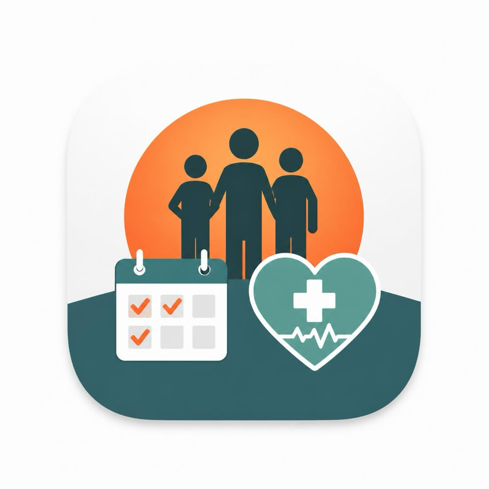

Дневник здоровьяHealth Diary
Health DiaryДневник здоровья
Здоровье всей семьи в одном приложении: болезни, исследования, прививки, процедуры, а также стоматология и здоровье зубов — зубная карта, пломбы и чистки с напоминаниями. Отметка «болеет / здоров» в одно касание, план прививок с напоминаниями, динамика показателей на графиках и отчёт в PDF для врача. Без аккаунта и без облака — всё хранится на вашем устройстве.The whole family's health in one app: illnesses, lab tests, vaccinations, procedures, plus dental care and teeth health — a tooth chart, fillings and cleanings with reminders. One-tap "sick / healthy" status, a vaccination schedule with reminders, trends on charts and a PDF report for the doctor. No account, no cloud — everything is stored on your device.
СкачатьDownload
Официальные магазины. Если кнопки нет — публикация в процессе.Official stores. If a button is missing, publishing is in progress.
Технические вопросы — appcreators.technolab@ya.ruTechnical questions — appcreators.technolab@ya.ru
СкриншотыScreenshots
Нажмите, чтобы открыть и листать стрелками или свайпом.Tap to open and browse with arrows or swipes.
ВозможностиFeatures
Учёт здоровья семьи без облака, аккаунтов и подписок.Family health tracking without cloud, accounts or subscriptions.
Как это работаетHow it works
Три шага от установки до первого отчёта врачу.Three steps from install to your first report for the doctor.
Имя и дата рождения для каждого в семье. Регистрация и аккаунт не нужны.Name and date of birth for everyone in the family. No registration or account needed.
Болезни, прививки, исследования, процедуры и зубы — по мере того, как они случаются.Illnesses, vaccinations, lab tests, procedures and teeth — as they happen.
Соберите отчёт в PDF за нужный период и отправьте его с телефона.Build a PDF report for the period you need and send it right from your phone.